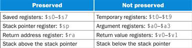
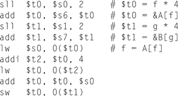

Design Principle 1: Simplicity favors regularity.
Design Principle 2: Smaller is faster.
Design Principle 3: Good design demands good compromises.
Terms
2.3 Operands of the Computer Hardware
word
The natural unit of access in a computer, usually a group of 32 bits; corresponds to the size of a register in the MIPS architecture.
address
A value used to delineate the location of a specific data element within a memory array.
alignment restriction
A requirement that data be aligned in memory on natural boundaries.
big-endian & little-endian


2.5 Representing Instructions in the Computer
opcode
The field that denotes the operation and format of an instruction.
2.7 Instructions for Making Decisions
basic block
A sequence of instructions without branches (except possibly at the end) and without branch targets or branch labels (except possibly at the beginning).
2.8 Supporting Procedures in Computer Hardware
program counter (PC)
The register containing the address of the instruction in the program being executed.
Figure 2.11

Exercises
※ The following solutions are my thoughts so that they may be wrong. If one of the solutions is wrong, please comment on that.
2.1 [5] <§2.2> For the following C statement, what is the corresponding MIPS assembly code? Assume that the variables f, g, h, and i are given and could be considered 32-bit integers as declared in a C program. Use a minimal number of MIPS assembly instructions.
f = g + (h–5);
addii, h, -5
addf, g, i
addf, g, i
2.2 [5] <§2.2> For the following MIPS assembly instructions above, what is a corresponding C statement?
add f, g, h
add f, i, f
f = i + (g + h);
2.3 [5] <§§2.2, 2.3> For the following C statement, what is the corresponding MIPS assembly code? Assume that the variables f, g, h, i, and j are assigned to registers ＄s0, ＄s1, ＄s2, ＄s3, and ＄s4, respectively. Assume that the base address of the arrays A and B are in registers ＄s6 and ＄7, respectively.
B[8] = A[i–j];
sub$t0, $s3, $s4# $t0 = i-jsll$t0, $t0, 2# $t0 = (i-j) * 4
lw$t1, 0($s6)# $t1 = A[0]add$t1, $t1, $t0# $t1 = &A[i-j]lw$t1, 0($t1)# $t1 = A[i-j]
sw$t1, 32($s7) # B[8] = A[i-j]2.4 [5] <§§2.2, 2.3> For the MIPS assembly instructions above, what is the corresponding C statement? Assume that the variables f, g, h, i, and j are assigned to registers ＄s0, ＄s1, ＄s2, ＄s3, and ＄s4, respectively. Assume that the base address of the arrays A and B are in registers ＄s6 and ＄s7, respectively.

f = A[f];
f = A[f+1] + A[f]
B[g] = f;
f = A[f+1] + A[f]
B[g] = f;
2.5 [5] <§§2.2, 2.3> For the MIPS assembly instructions in Exercise 2.4, rewrite the assembly code to minimize the number if MIPS instructions (if possible) needed to carry out the same function.
sll$t0, $s0, 2# $t0 = f * 4
add$t0, $s6, $t0# $t0 = &A[f]
sll$t1, $s1, 2# $t1 = g * 4
add$t1, $s7, $t1# $t1 = &B[g]
lw$s0, 0($t0)# f = A[f]
addi$t2, $t0, 4
lw$t0, 4($t0)# $t0 = A[f+1]
add$t0, $t0, $s0# $t0 = A[f+1] + A[f]
sw$t0, 0($t1)# B[g] = $t02.6 The table below shows 32-bit values of an array stored in memory.
// in row 2 of the table of the textbook, the "Address" is 28, not 38.
| Address | Data |
| 24 | 2 |
| 28 | 4 |
| 32 | 3 |
| 36 | 6 |
| 40 | 1 |
2.6.1 [5] <§§2.2, 2.3> For the memory locations in the table above, write C code to sort the data from lowest to highest, placing the lowest value in the smallest memory location shown in the figure. Assume that the data shown represents the C variable called Array, which is an array of type int, and that the first number in the array shown is the first element in the array. Assume that this particular machine is a byte-addressable machine and a word consists of four bytes.
2.6.2 [5] <§§2.2, 2.3> For the memory locations in the table above, write MIPS code to sort the data from lowest to highest, placing the lowest value in the smallest memory location. Use a minimum number of MIPS instructions. Assume the base address of Array is stored in register $s6.
C
temp = Array[0];
Array[0] = Array[4];
Array[4] = temp;// Array[4] = 2
temp = Array[1];
Array[1] = Array[4];
Array[4] = temp;// Array[4] = 4
temp = Array[3];
Array[3] = Array[4];
Array[4] = temp;// Array[4] = 6
Array[0] = Array[4];
Array[4] = temp;// Array[4] = 2
temp = Array[1];
Array[1] = Array[4];
Array[4] = temp;// Array[4] = 4
temp = Array[3];
Array[3] = Array[4];
Array[4] = temp;// Array[4] = 6
MIPS
lw$t0, 0($s6)
lw$t1, 16($s6)
sw$t1, 0($s6)# A[0] = 1
sw$t0, 16($s6)# A[4] = 2
lw$t0, 4($s6)
lw$t1, 16($s6)
sw$t1, 4($s6)# A[1] = 2
sw$t0, 16($s6)# A[4] = 4
lw$t0, 12($s6)
lw$t1, 16($s6)
sw$t1, 12($s6)# A[3] = 4
sw$t0, 16($s6)# A[4] = 6
2.7 [5] <§2.3> Show how the value 0xabcdef12 would be arranged in memory of a little-endian and a big-endian machine. Assume the data is stored starting at address 0.
big-endian
(memory)
low---------------------> high
low---------------------> high
ab | cd | ef | 12
little-endian
2.8 [5] <§2.4> Translate 0xabcdef12 into decimal.
(memory)
low---------------------> high
low---------------------> high
12 | ef | cd | ab
2.8 [5] <§2.4> Translate 0xabcdef12 into decimal.
- 10x167 + 11x166 + … + 2x160 = 2882400018
2.9 [5] <§§2.2, 2.3> Translate the following C code to MIPS. Assume that the variables f, g, h, i, and j are assigned to registers ＄s0, ＄s1, ＄s2, ＄s3, and ＄s4, respectively. Assume that the base address of the arrays A and B are in registers ＄s6 and ＄s7, respectively. Assume that the elements of the arrays A and B are 4-byte words:
B[8] = A[i] + A[j];
sll$t0, $s3, 2
add$t0, $t0, $s6
lw$t0, 0($t0)# $t0 = A[i]
sll$t1, $s4, 2
add$t1, $t1, $s6
lw$t1, 0($t1)# $t1 = A[j]
add$t2, $t0, $t1
sw$t2, 32($s7)# B[8] = A[i] + A[j]2.10 [5] <§§2.2, 2.3> Translate the following MIPS code to C. Assume that the variables f, g, h, i, and j are assigned to registers ＄s0, ＄s1, ＄s2, ＄s3, and ＄s4, respectively. Assume that the base address of the arrays A and B are in registers ＄s6 and ＄s7, respectively.
addi$t0, $s6, 4add$t1, $s6, $0sw$t1, 0($t0)lw$t0, 0($t0)add$s0, $t1, $t0A[1] = A[0];
f = A[0] + A[1];
f = A[0] + A[1];
2.11 [5] <§§2.3, 2.5> For each MIPS instruction, show the value of the opcode (OP), source register (RS), and target register (RT) fields. For the I-type instructions, show the value of the immediate field, and for the R-type instructions, show the value of the destination register (RD) field.
addi$t0, $s6, 4# I-type, OP : 8, RS : 22, RT : 8, IM : 4add$t1, $s6, $0# R-type, OP : 32, RS : 22, RT : 0, RD : 9sw$t1, 0($t0)# I-type, OP : 43, RS : 8, RT : 9, IM : 0lw$t0, 0($t0)# I-type, OP : 35, RS : 8, RT : 8, IM : 0add$s0, $t1, $t0# R-type, OP : 32, RS : 9, RT : 8, RD : 162.12 Assume that registers ＄s0 and ＄s1 hold the values 0x80000000 and 0xD0000000, respectively.
2.12.1 [5] <§2.4> What is the value of ＄t0 for the following assembly code?
add ＄t0, ＄s0, ＄s1
2.12.2 [5] <§2.4> Is the result in ＄t0 the desired result, or has there been overflow?
2.12.3 [5] <§2.4> For the contents of registers ＄s0 and ＄s1 as specified above, what is the value of ＄t0 for the following assembly code?
sub ＄t0, ＄s0, ＄s1
2.12.4 [5] <§2.4> Is the result in ＄t0 the desired result, or has there been overflow?
2.12.5 [5] <§2.4> For the contents of registers ＄s0 and ＄s1 as specified above, what is the value of ＄t0 for the following assembly code?
add ＄t0, ＄s0, ＄s1
add ＄t0, ＄t0, ＄s0
2.12.6 [5] <§2.4> Is the result in ＄t0 the desired result, or has there been overflow?
- ＄t0 = ＄s0 + ＄s1 = 0x80000000 + 0xD0000000 = 0x150000000
- There has been overflow.
- ＄t0 = ＄s0 - ＄s1 = 0x80000000 - 0xD0000000 = -0x50000000 (2's complement : 1011 0000 0000 0000 0000 0000 0000 0000)
- Yes, it is.
- ＄t0 = ＄s0 + ＄s1 = 0x80000000 + 0xD0000000 = 0x150000000
＄t0 = ＄t0 + ＄s0 = 0x150000000 + 0x80000000 = 0x1D0000000 - There has been overflow.
2.13 Assume that ＄s0 holds the value 128ten.
2.13.1 [5] <§2.4> For the instruction add ＄t0, ＄s0, ＄s1, what is the range(s) of values for ＄s1 that would result in overflow?
2.13.2 [5] <§2.4> For the instruction sub ＄t0, ＄s0, ＄s1, what is the range(s) of values for ＄s1 that would result in overflow?
2.13.3 [5] <§2.4> For the instruction sub ＄t0, ＄s1, ＄s0, what is the range(s) of values for ＄s1 that would result in overflow?
- The range of values for＄s1 is from 2147483520 to 2147483647. (binary : from 01111111111111111111111110000000) to 01111111111111111111111111111111)
128ten = 0000 0000 0000 0000 0000 0000 1000 0000two - The range of values for＄s1 is from -2147483648 to -2147483520. (binary : from 10000000000000000000000000000000 to 10000000000000000000000001111111)
- The range of values for＄s1 is from -2147483648 to -2147483521. (binary : from 10000000000000000000000000000000 to 10000000000000000000000001111111)
-128ten = 11111111111111111111111110000000two
2.14 [5] <§§2.4, 2.5> Provide the type and assembly language instruction for the following binary value: 0000 0010 0001 0000 1000 0000 0010 0000two
R-type,add ＄s0, ＄s0, ＄s0
| opcode | rs | rt | rd | shamt | funct |
|---|---|---|---|---|---|
| 000000 | 10000 | 10000 | 10000 | 00000 | 100000 |
2.15 [5] <§§2.4, 2.5> Provide the type and hexadecimal representation of following instruction: sw ＄t1, 32(＄t2)
I-type,0xAD490020 (binary : 1010 1101 0100 1001 0000 0000 0010 0000)
| opcode | rs | rt | immediate |
|---|---|---|---|
| 101011 | 01010 | 01001 | 0000 0000 0010 0000 |
2.16 [5] <§2.5> Provide the type, assembly language instruction, and binary representation of instruction described by the following MIPS fields:
op=0, rs=3, rt=2, rd=3, shamt=0, funct=34
R-type,sub ＄v1, ＄v1, ＄v0
| opcode | rs | rt | rd | shamt | funct |
|---|---|---|---|---|---|
| 000000 | 00011 | 00010 | 00011 | 00000 | 100010 |
2.17 [5] <§2.5> Provide the type, assembly language instruction, and binary representation of instruction described by the following MIPS fields:
op=0x23, rs=1, rt=2, const=0x4
I-type,lw ＄v0, 4(＄at)
| opcode | rs | rt | immediate |
|---|---|---|---|
| 100011 | 00001 | 00010 | 0000 0000 0000 0100 |
2.18 [5] <§2.5> Assume that we would like to expand the MIPS register file to 128 registers and expand the instruction set to contain four times as many instructions.
2.18.1 [5] <§2.5> How would this affect the size of each of the bit fields in the R-type instructions?
2.18.2 [5] <§2.5> How would this affect the size of each of the bit fields in the I-type instructions?
2.18.3 [5] <§§2.5, 2.10> How could each of two propose changes decrease the size of an MIPS assembly program? On the other hand, how could the proposed change increase the size of an MIPS assembly program?
- All bit fields ends up with 2 addtional bits. There are 6 bit fields for R-type so the size of a word is 44.
- As the word size of R-type above is 44, the word size of I-type is equally 44.
- // I am sorry to say I don't know a solution for this problem. T_T
Referrence : http://www.quora.com/How-does-expanding-the-MIPS-register-file-affect-the-size-of-bit-fields
2.19 Assume the following register contents:
$t0 = 0xAAAAAAAA, $t1 = 0x123456782.19.1 [5] <§2.6> For the register values shown above, what is the value of $t2 for the following sequence of instructions?
sll $t2, $t0, 4or $t2, $t2, $t12.19.2 [5] <§2.6> For the register values shown above, what is the value of $t2 for the following sequence of instructions?
sll $t2, $t0, 4andi $t2, $t2, –12.19.3 [5] <§2.6> For the register values shown above, what is the value of $t2 for the following sequence of instructions?
srl $t2, $t0, 3andi $t2, $t2, 0xFFEF- ＄t2 = 0xBABEFEF8
- ＄t2 = 0xAAAAAAA0
- ＄t2 = 0x5545
2.20 [5] <§2.6> Find the shortest sequence of MIPS instructions that extracts bits 16 down to 11 from register ＄t0 and uses the value of this field to replace bits 31 down to 26 in register ＄t1 without changing the other 26 bits of register ＄t1.
solution 1
srl$t2, $t0, 11
sll$t2, $t2, 26
srl$t1, $t1, 6
add$t2, $t2, $t1solution 2
andi$t2, $t0, 0x1F800
sll$t2, $t2, 15
srl$t1, $t1, 6
add$t2, $t2, $t12.21 [5] <§2.6> Provide a minimal set of MIPS instructions that may be used to implement the following pseudoinstruction:
not $t1, $t2 // bit-wise invertnor$t1, $t2, $zero2.22 [5] <§2.6> For the following C statement, write a minimal sequence of MIPS assembly instructions that does the identical operation. Assume ＄t1 = A, ＄t2 = B, and ＄s1 is the base address of C.
A = C[0] << 4;
lw$t1, 0($s1)
sll$t1, $t1, 4// I don't know why B is displayed.
2.23 [5] <§2.7> Assume ＄t0 holds the value 0x00101000. What is the value of ＄t2 after the following instructions?
slt＄t2, ＄0, ＄t0bne＄t2, ＄0, ELSEj DONEELSE: addi ＄t2, ＄t2, 2DONE:- the value of $t2 is 3.
2.24 [5] <§2.7> Suppose the program counter (PC) is set to 0x2000 0000. Is it possible to use the jump (j) MIPS assembly instruction to set the PC to the address as 0x4000 0000? Is it possible to use the branch-on-equal (beq) MIPS assembly instruction to set the PC to this same address?
- Though jump can locate to full 32bits address, it's not possible to jump to a address greater than 28bits with one single jump instruction.
- It's not possible to branch, since branch is I-type instruction, which can only use 18bits address.
Reference
2.25 The follow instruction is not included in the MIPS instruction set:
rpt $t2, loop # if(R[rs]>0) R[rs]=R[rs]–1, PC=PC+4+BranchAddr
2.25.1 [5] <§2.7> If this instruction were to be implemented in the MIPS instruction set, what is the most appropriate instruction format?
2.25.2 [5] <§2.7> What is the shortest sequence of MIPS instructions that performs the same operation?
- I-type
Loop:slt$t3, $0, $t2
beq$t3, $0, Exit
sub$t2, $t2, 1
jLoop
Exit:
2.26 Consider the following MIPS loop:
LOOP:slt $t2, $0, $t1beq $t2, $0, DONEsubi $t1, $t1, 1addi $s2, $s2, 2j LOOPDONE:2.26.1 [5] <§2.7> Assume that the register $t1 is initialized to the value 10. What is the value in register ＄s2 assuming the ＄s2 is initially zero?
2.26.2 [5] <§2.7> For each of the loops above, write the equivalent C code routine. Assume that the registers ＄s1, ＄s2, ＄t1, and ＄t2 are integers A, B, i, and temp, respectively.
2.26.3 [5] <§2.7> For the loops written in MIPS assembly above, assume that the register ＄t1 is initialized to the value N. How many MIPS instructions are executed?
- ＄s2 = 20
- while(i>0)
i = i-1;
B = B+2; - the loop is executed N*5+2 times
2.27 [5] <§2.7> Translate the following C code to MIPS assembly code. Use a minimum number of instructions. Assume that the values of a, b, i, and j are in registers ＄s0, ＄s1, ＄t0, and ＄t1, respectively. Also, assume that register ＄s2 holds the base address of the array D.
for(i=0; i<a; i++)
for(j=0; j<b; j++)
D[4*j] = i + j;
add$t0, $0, $0# i = 0
L1:slt$t2, $t0, $s0# i < a
beq$t2, $0, Exit# $t2 == 0, go to Exit
add$t1, $0, $0# j = 0
L2:slt$t2, $t1, $s1# j < b
beq$t2, $0, L3# if $t2 == 0, go to L3
add$t2, $t0, $t1# i+j
sll$t4, $t1, 4# $t4 = 4*j(sll was written instead of mul.)
add$t3, $t4, $s2# $t3 = &D[4*j]
sw$t2, 0($t3)# D[4*j] = i+j
addi$t1, $t1, 1# j = j+1
jL2
L3:addi$t0, $t0, 1# i = i+1
jL1
Exit:2.28 [5] <§2.7> How many MIPS instructions does it take to implement the C code from exercise 27? If the variables a and b are initialized to 10 and 1 and all elements of D are initially 0, what is the total number of MIPS instructions that is executed to complete the loop?
- formula = 3 + a*(4 + (3 + b*8))
(Inner) 3 + b*4 + b*4
(Outer) 3 + a*4 + a*(Inner) - the total number of MIPS instrucitons = 3 + 10*(4 + (3 + 1*8)) = 153
// 문제에는 bne $t2, $s0, LOOP 라고 나와있는데 오타라고 생각하여 $s0 -> $0로 수정합니다.
2.30 [5] <§2.7> Rewrite the loop from Exercise 2.29 reduce the number of MIPS instructions executed.
2.29 [5] <§2.7> Translate the following loop into C. Assume that the C-level integer i is held in register $t1, $s2 holds the C-level integer called result, and $s0 holds the base address of the integer MemArray.
addi $t1, $0, $0LOOP:lw $s1, 0($s0)add $s2, $s2, $s1addi $s0, $s0, 4addi $t1, $t1, 1slti $t2, $t1, 100bne $t2, $0, LOOPi = 0;
do {
result += MemArray[i];
i++;
} while(i<100);
do {
result += MemArray[i];
i++;
} while(i<100);
2.30 [5] <§2.7> Rewrite the loop from Exercise 2.29 reduce the number of MIPS instructions executed.
addi$t1, $s0, 400LOOP:lw$s1, 0($s0)add$s2, $s2, $s1addi$s0, $s0, 4
slti$t2, $s0, $t1bne$t2, $0, LOOP
2.31 [5] <§2.8> Implement the following C code in MIPS assembly. What is the total number of MIPS instructions needed to execute the function?
int fib(int n) {
if (n==0)
return 0;
else if (n==1)
return 1;
else
return fib(n-1) + fib(n-2);
}
- We assume $a0 is non-negative.
fib:
addi$sp, $sp, -12# allocate stack frame of 12 bytes
sw$a0, 8($sp)# save n
sw$ra, 4($sp)# save return address
sw$s0, 0($sp)# save $s0
slti$t0, $a0, 2# fib(i) = i for i = 0, 1
beq$t0, $0, else
add$v0, $a0, $0# $v0 = 0 or 1
jexit# go to exit
else:
addi$a0, $a0, -1# fib(n-1)
jalfib# recursive call
add$s0, $v0, $0
addi$a0, $a0, -1# fib(n-2)
jalfib# recursive call
add$v0, $v0, $s0
exit:
lw$a0, 8($sp)# restore $a0
lw$ra, 4($sp)# restore return address
lw$s0, 0($sp)# restore $s0
addi$sp, $sp, 12# free stack frame
jr$ra# return to caller
2.32 [5] <§2.8> Functions can often be implemented by compilers “in-line.” An in-line function is when the body of the function is copied into the program space, allowing the overhead of the function call to be eliminated. Implement an “in-line” version of the the C code in the table in MIPS assembly. What is the reduction in the total number of MIPS assembly instructions needed to complete the function? Assume that the C variable n is initialized to 5.
- Due to recursive nature of the code, not possible for the compiler to in-line the function call.
2.33 [5] <§2.8> For each function call, show the contents of the stack after the function call is made. Assume the stack pointer is originally at address 0x7ffffffc, and follow the register conventions as specified in Figure 2.11.
- Assume that the C variable n is initialized to 3.
0x7ffffff0$a0 address
0x7fffffe4save return address of caller (n=3)
0x7fffffd8$s0 address
0x7fffffcc$a0 address
0x7fffffc0save return address of 1st recursive call (n=2)
0x7fffffb4$s0 address
0x7fffffa8$a0 address
0x7fffff9csave return address of 2nd recursive call (n=1)
0x7fffff90$s0 address
0x7fffffa8restore stack pointer of 2nd recursive call
0x7fffffa8$a0 address
0x7fffff9csave return address of 3rd recursive call (n=0)
0x7fffff90$s0 address0x7fffffa8restore stack pointer of 3rd recursive call
0x7fffffccrestore stack pointer of 1st recursive call
0x7fffffcc$a0 address
0x7fffffc0save return address of 4th recursive call (n=1)
0x7fffffb4$s0 address
0x7fffffccrestore stack pointer of 4th recursive call
0x7ffffff0restore stack pointer of caller
2.34 Translate function f into MIPS assembly language. If you need to use registers ＄t0 through ＄t7, use the lower-numbered registers first. Assume the function declaration for func is “int func(int a, int b);”. The code for function f is as follows:
int f(int a, int b, int c, int d){
return func(func(a,b),c+d);
}
f:addi$sp, $sp, -4# allocate stack frame of 4 bytessw$ra, 0($sp)# save return addressjalfunc# call func(a,b)add$a0, $v0, $0# $a0 = result of func(a,b)add$a1, $a2, $a3# $a1 = c+djalfunc# call func(func(a,b), c+d)lw$ra, 0($sp)# restore return addressaddi$sp, $sp, 4# free stack framejr$ra# return to caller2.35 [5] <§2.8> Can we use the tail-call optimization in this function? If no, explain why not. If yes, what is the difference in the number of executed instructions in f with and without the optimization?
※ What Is Tail Call Optimization? : http://stackoverflow.com/questions/310974/what-is-tail-call-optimization
※ What Is Tail Call Optimization? : http://stackoverflow.com/questions/310974/what-is-tail-call-optimization
- Yes, we can.Tail-call optimization is where you are able to avoid allocating a new stack frame for a function because the calling function will simply return the value that it gets from the called function.
2.36 [5] <§2.8> Right before your function f from Exercise 2.34 returns, what do we know about contents of registers $t5, $s3, $ra, and $sp? Keep in mind that we know what the entire function f looks like, but for function func we only know its declaration.
- Register ＄ra is equal to the return address in the caller function, registers ＄sp and ＄s3 have the same values they had when function f was called, and register ＄t5 can have an arbitrary value. For ＄t5, note that although function f does not modify it, function func is allowed to modify it so we cannot assume anything about $t5 after function func has been called.
2.37 [5] <§2.9> Write a program in MIPS assembly language to convert an ASCII number string containing positive and negative integer decimal strings, to an integer. Your program should expect register ＄a0 to hold the address of a null-terminated string containing some combination of the digits 0 through 9. Your program should compute the integer value equivalent to this string of digits, then place the number in register ＄v0. If a non-digit character appears anywhere in the string, your program should stop with the value −1 in register ＄v0. For example, if register ＄a0 points to a sequence of three bytes 50ten, 52ten, 0ten (the null-terminated string “24”), then when the program stops, register ＄v0 should contain the value 24ten.
str2int:# convert string to integerli$t5, 0x2B# $t5 = '+'li$t6, 0x30# $t6 = '0'li$t7, 0x39# $t7 = '9'li$v0, 0# initialize $v0 = 0add$t0, $0, $a0# $t0 = pointer to stringlbu$t1, 0($t0)# load $t1 = sign characteradd$t3, $t1, $0# $t3 = sign characteraddiu$t0, $t0, 1# point to next charlbu$t1, 0($t0)# load $t1 = digit characterLOOP:slt$t2, $t1, $t6# char < '0'bne$t2, $0, NoDigitslt$t2, $t1, $t7# char > '9'beq$t2, $0, NoDigitsubu$t1, $t1, $t6# convert char to integermul$v0, $v0, 10# multiply by 10add$v0, $v0, $t1# $v0 = $v0 * 10 + digitaddiu$t0, $t0, 1# point to next charlbu$t1, 0($t0)# load $t1 = next digitbne$t1, $0, LOOP# branch if not end of stringbne$t3, $t5, negative# if $t3 != '+', go to negativejr$ra# return integer valuenegative:sub$v0, $0, $v0# -$v0jr$ra# return integer valueNoDigit:li$v0, -1# return -1 in $v0jr$ra2.38 [5] <§2.9> For the following code:
lbu $t0, 0($t1)sw $t0, 0($t2)Assume that the register ＄t1 contains the address 0x1000 0000 and the register ＄t2 contains the address 0x1000 0010. Note the MIPS architecture utilizes big-endian addressing. Assume that the data (in hexadecimal) at address 0x1000 0000 is: 0x11223344. What value is stored at the address pointed to by register ＄t2?
- ＄t2value = 0x0000 0011 (=17ten)big-endian format in memory(high)44332211(low)
2.39 [5] <§2.10> Write the MIPS assembly code that creates the 32-bit constant 0010 0000 0000 0001 0100 1001 0010 0100two and stores that value to register $t1.
lui$t0, 0x2001# $t0 = 0010 0000 0000 0001 0000 0000 0000 0000two
ori$t0, 0x4924# $t0 = 0010 0000 0000 0001 0100 1001 0010 0100two
add$t1, $t0, $0# save $t0 in $t1 ( $t0 = 0x20014924)2.40 [5] <§§2.6, 2.10> If the current value of the PC is 0x00000000, can you use a single jump instruction to get to the PC address as shown in Exercise 2.39?
- We can't use a single jump instruction, since the jump address range is 0xF8000004 ~ 0x08000003.
PC + 4 + 0x07FF FFFF = 0x0800 0003
PC + 4 - 0x0800 0000 = 0xF800 0004
2.41 [5] <§§2.6, 2.10> If the current value of the PC is 0x00000600, can you use a single branch instruction to get to the PC address as shown in Exercise 2.39?
- we can't use a single branch instruction, since the branch address range is 0xFFFFE604 ~ 0x00020600,
PC + 4 + 0x1FFFC = 0x0002 0600
PC + 4 - 0x20000 = 0xFFFE 0604
2.42 [5] <§§2.6, 2.10> If the current value of the PC is 0x1FFFf000, can you use a single branch instruction to get to the PC address as shown in Exercise 2.39?
- we can use a single branch instruction, since the branch address range is 0x1FFDF004 ~ 0x2001F000,
PC + 4 + 0x1FFFC = 0x2001 F000
PC + 4 - 0x20000 = 0x1FFD F004
2.43 [5] <§2.11> Write the MIPS assembly code to implement the following C code:
lock(lk);shvar=max(shvar,x);unlock(lk);Assume that the address of the lk variable is in ＄a0, the address of the shvar variable is in ＄a1, and the value of variable x is in ＄a2. Your critical section should not contain any function calls. Use ll/sc instructions to implement the lock() operation, and the unlock() operation is simply an ordinary store instruction.
again:addi$a0, $0, 1# lock(lk)
ll$t0, 0($s0)
sc$a0, 0($s0)
beq$a0, $0, again# branch if store fails
slt$t1, $a1, $a2# shvar = max(shvar,x)
beq$t1, $0, shvar# if shvar > x, go to shvar
add$a1, $a2, $0
jul
shvar:add$a1, $a1, $0
ul:addi$a0, $0, $0# unlock(lk)
sw$a0, 0($s0)2.44 [5] <§2.11> Repeat Exercise 2.43, but this time use ll/sc to perform an atomic update of the shvar variable directly, without using lock() and unlock(). Note that in this problem there is no variable lk.
// I didn't understand this exercise.
2.45 [5] <§2.11> Using your code from Exercise 2.43 as an example, explain what happens when two processors begin to execute this critical section at the same time, assuming that each processor executes exactly one instruction per cycle.
// I didn't understand this exercise.
2.46 Assume for a given processor the CPI of arithmetic instructions is 1, the CPI of load/store instructions is 10, and the CPI of branch instructions is 3. Assume a program has the following instruction breakdowns: 500 million arithmetic instructions, 300 million load/store instructions, 100 million branch instructions.
2.46.1 [5] <§2.19> Suppose that new, more powerful arithmetic instructions are added to the instruction set. On average, through the use of these more powerful arithmetic instructions, we can reduce the number of arithmetic instructions needed to execute a program by 25%, and the cost of increasing the clock cycle time by only 10%. Is this a good design choice? Why?
2.46.2 [5] <§2.19> Suppose that we find a way to double the performance of arithmetic instructions. What is the overall speedup of our machine? What if we find a way to improve the performance of arithmetic instructions by 10 times?
// I wouldn't like to solve 2.46 ~ 2.47 since in this chapter I think performance is not a important portion.
2.47 Assume that for a given program 70% of the executed instructions are arithmetic, 10% are load/store, and 20% are branch.
2.47.1 [5] <§2.19> Given the instruction mix and the assumption that an arithmetic instruction requires 2 cycles, a load/store instruction takes 6 cycles, and a branch instruction takes 3 cycles, find the average CPI.
2.47.2 [5] <§2.19> For a 25% improvement in performance, how many cycles, on average, may an arithmetic instruction take if load/store and branch instructions are not improved at all?
2.47.3 [5] <§2.19> For a 50% improvement in performance, how many cycles, on average, may an arithmetic instruction take if load/store and branch instructions are not improved at all?
References
2.27
http://stackoverflow.com/questions/19461669/c-programming-to-mips-assembly-for-loops
2.30
http://stackoverflow.com/questions/21544590/converting-mips-instruction-to-c-and-reducing-the-execution
2.31
2.30
http://stackoverflow.com/questions/21544590/converting-mips-instruction-to-c-and-reducing-the-execution
2.31
2.32, 2.33, 2.34, 2.36, 2.37
2.41